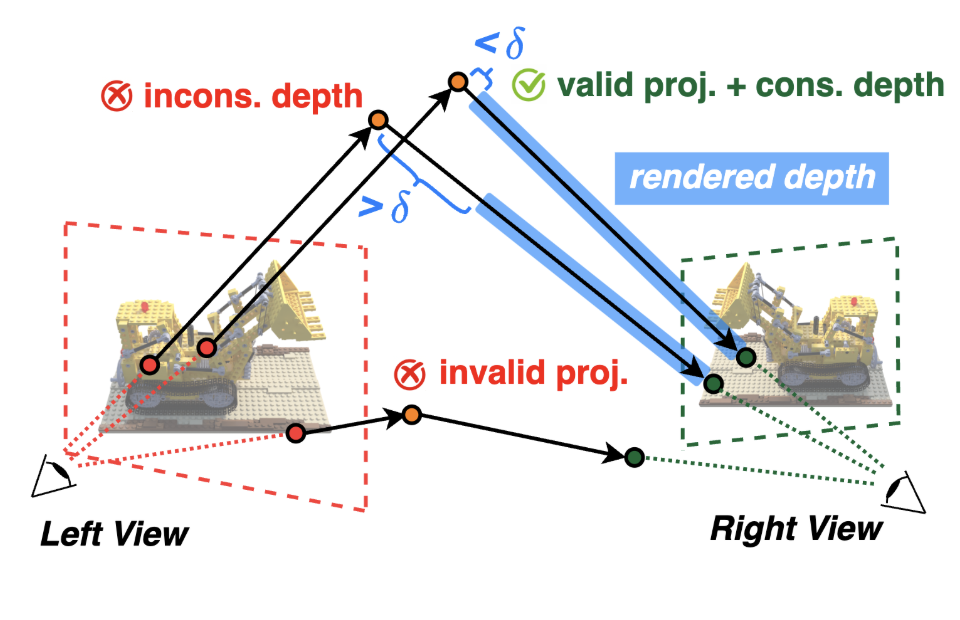

Featured Research
3D Dataset Distillation: Condensing 3D Datasets for Enhanced Data Efficiency in 3D Reconstruction
I conducted research on 3D dataset distillation for efficient 3D reconstruction, addressing the geometric redundancy and scalability limits of Neural Radiance Fields (NeRFs). I developed NeRD, a principled system that keeps the NeRF model fixed while iteratively pruning redundant views using 3D projection validity and depth-consistency constraints to preserve independent spatial information. Our experiments show near-full reconstruction quality using as little as 40% of the original data, demonstrating that viewpoint diversity matters more than dataset size. This work was conducted at Georgia Tech's Efficient and Intelligent Computing Lab under Prof. Yingyan (Celine) Li, with collaborators Jason Zhang, Renyun Li, and Yonggan Fu.
